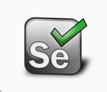

Tool Set

Environment variables
- System variables
- User variables
- Path variable
Java SDK
oracle.com
- Downloads -> Java SE -> version 8xxx
- Install
- Add the JDK path to system PATH environment variable
- Test the installation with command: java -version
Apache Maven
Apache Maven
- Download the latest binary zip
- Unzip to a directory of you choice
- Add the bin dir of the installation to PATH
- Create and new env variable called JAVA_HOME pointing to the JDK path
- Test the Maven installation with command: mvn--version
IntelliJ IDEA
jetbrains.com
- Download IntelliJ IDEA Community Edition
- Install
GIT
git-scm.com
- Create a new user environment variable called HOME, pointing to your user’s home directory
(C:\Users\username)
- Add the GIT install path to PATH environment variable
- Test the GIT installation with command: git
- Configure GIT with commands:
git config--global user.name “your user”
git config--global user.email“your email”
GIT Repository
gitlab.com
- Register
- Create a new repository (project)
- Give developer permissions to my username (adim.moldovan)
Browsers
- Install Chrome
- Install Firefox
- Install Internet Explorer